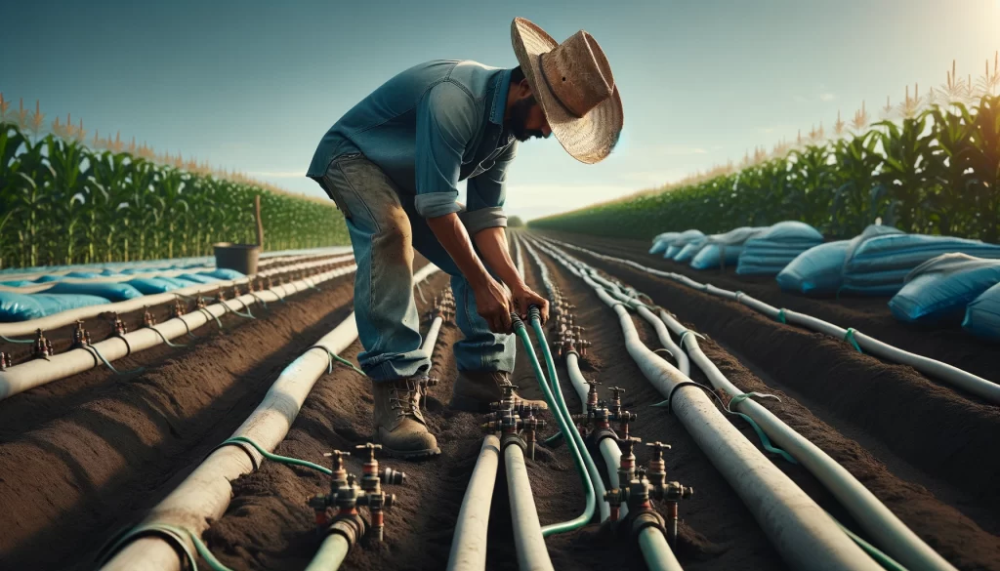

En HC IRRIGACION, creemos que cada gota cuenta. El riego por goteo es una tecnología de irrigación de alta eficiencia que suministra agua directamente a las raíces de las plantas, gota a gota, mediante una red de tuberías, mangueras y emisores llamados goteros. Este método permite un uso racional del agua, reduce el desperdicio y mejora significativamente el rendimiento de los cultivos.
💧 Transformamos agua en productividad

🌱 ¿Cómo funciona?

- El agua fluye por tuberías principales y secundarias, diseñadas según el terreno y tipo de cultivo.
- Se distribuye a través de goteros estratégicamente ubicados cerca de cada planta.
- El sistema puede incluir filtros, reguladores de presión, sensores de humedad y automatización por zonas.
🌾 Ventajas del riego por goteo

- Hasta un 50% de ahorro en consumo de agua comparado con métodos tradicionales.
- Reducción de maleza y enfermedades al mantener la superficie seca.
- Mayor uniformidad en el crecimiento de los cultivos.
- Compatibilidad con fertilización líquida (fertirrigación).
- Adaptabilidad a terrenos irregulares y zonas áridas.
🚀 Tecnología aplicada al campo mexicano

Nuestra misión es llevar soluciones inteligentes al corazón del campo. Utilizamos herramientas modernas como sensores de humedad, controladores automáticos, y monitoreo remoto para que el agricultor tenga el control total del sistema desde su celular. Esto permite tomar decisiones informadas, ahorrar recursos y aumentar la rentabilidad.
🌍 Compromiso con el medio ambiente

En un contexto de cambio climático y escasez hídrica, el riego eficiente no es un lujo: es una necesidad. Al implementar sistemas de riego por goteo, contribuimos a la conservación del agua, la reducción de emisiones y el uso responsable de los recursos naturales. Porque cuidar el agua es cuidar el futuro.
🔧 Soluciones personalizadas
Cada terreno es único. Por eso, diseñamos sistemas de riego adaptados al tipo de cultivo, clima, suelo y presupuesto. Ya sea que tengas un huerto familiar, una parcela agrícola o una operación comercial, nuestros expertos te acompañan desde el diseño hasta la instalación y mantenimiento.
📸 Instalacion de sistemas de riego en acción

Sistema de goteo eficiente para tomates en invernadero.
Instalación de tuberías principales en terreno agrícola.
Panel de control automatizado para gestionar horarios de riego.
Goteros en acción, distribuyendo agua de forma precisa.
Sensor de humedad que optimiza el uso del agua.
Vista aérea de parcela con sistema de riego completo.
Sistema de goteo eficiente para tomates en invernadero.
Instalación de tuberías principales en terreno agrícola.
Panel de control automatizado para gestionar horarios de riego.
Goteros en acción, distribuyendo agua de forma precisa.
Sensor de humedad que optimiza el uso del agua.
Vista aérea de parcela con sistema de riego completo.
🌱NOSOTROS – HC IRRIGACION
Creemos que el agua no solo riega cultivos: conecta raíces, nutre comunidades y da vida a la tierra. Somos especialistas en la instalación de sistemas de riego inteligentes, diseñados para adaptarse a las necesidades reales del campo mexicano.
Nuestro logotipo representa lo que somos:
Una gota de agua que alimenta múltiples cultivos —arándanos, aguacates, frambuesas y zarzamoras— todos unidos por una raíz común.
Esa raíz es nuestra visión: eficiencia, sostenibilidad y tecnología al servicio del agricultor.
💧 ¿Qué nos mueve?
- Optimizar el uso del agua en cada metro de tierra.
- Diseñar soluciones personalizadas para cada tipo de cultivo.
- Conectar tecnología con tradición agrícola, sin perder el alma del campo.
🌿Nuestra promesa
En HC IRRIGACION, no solo instalamos sistemas de riego: sembramos confianza, cultivamos soluciones y cosechamos resultados que perduran. Cada gota que fluye por nuestras instalaciones representa el compromiso con quienes trabajan la tierra día a día.
Sabemos que el agua es más que un recurso: es vida, es futuro, es esperanza. Por eso, diseñamos sistemas que respetan el entorno, se adaptan a cada cultivo y optimizan cada centímetro de suelo. Nuestra promesa es clara: llevar agua con inteligencia, sensibilidad y propósito.
Porque detrás de cada raíz hay una historia. Y detrás de cada historia, estamos nosotros: HC IRRIGACION, una gota que transforma el suelo en vida.
 Contactanos
Contactanos
📞 Comunícate con nosotros
Llamar: +52 341 242 6620
WhatsApp: Enviar mensaje
Ubicación: Zapotiltic, Jalisco, México